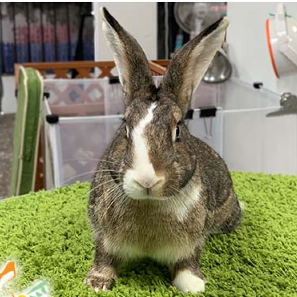
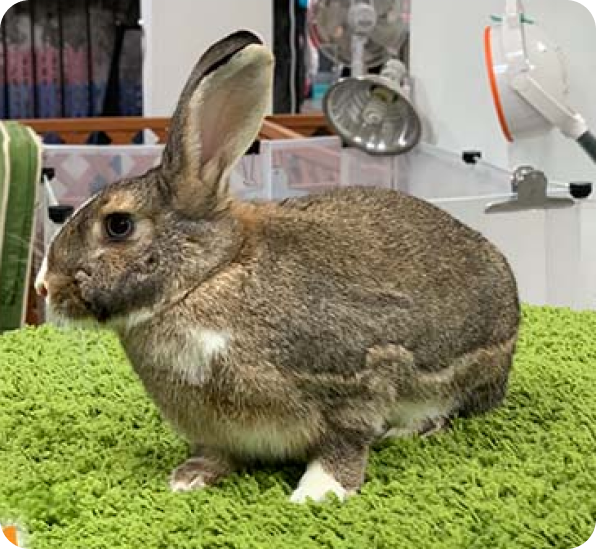
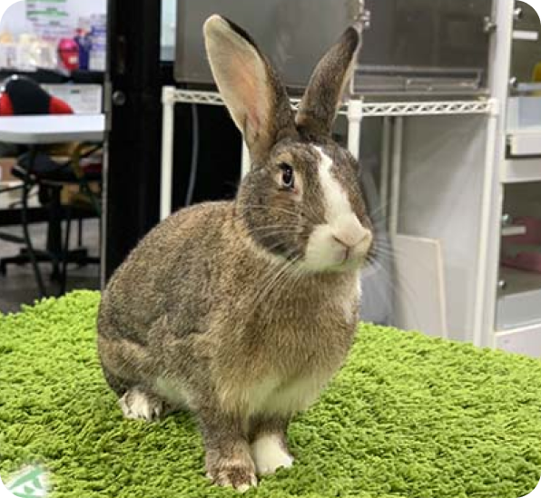
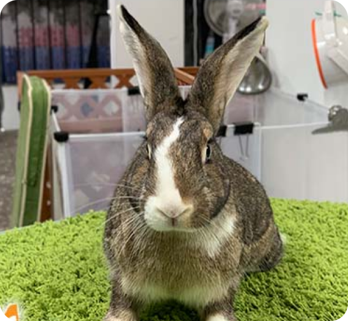

<開放認養> 驚奇隊長
- 地點：台北愛兔
- 性別：女
- 重量：1.6kg
- 品種：道奇兔
- 預估歲數：1.5歲（2019/5/4預估）
- 狀況：收容前已結紮,健檢狀況大致良好
- 個性：
漂亮可愛的小淑女，有點慢熟，衛生習慣良好，喜歡摸摸，熟了之後很黏人
兔兔際遇
民眾不續養，委託愛兔協會照顧與收容。道奇兔花色似連身衣，故以漫威女英雄腳色命名。收容前已結紮，
健檢狀況大致良好，是個可愛的小女生，驚奇隊長甜進你心窩！快點來帶她回家！
兔兔健康紀錄
- 2020/09/09 狀況良好已拆線，不須回診(隔日再拆頭套)
- 2020/09/02 胸口下發現有腫塊，切除腹部腫塊送驗。
- 2020/06/10 左眼流淚狀況給予人工淚液維護，鼻淚管狀況良好。
- 2020/04/29 回診，復原狀況良好。
- 2020/03/03 基本檢查狀況良好，咬合不正齒列不正已經好很多。
- 2020/02/04 複檢血檢，量血壓，完整血檢大致正常，紅血球HCT和上次差不多。
- 2020/01/07 血檢淋巴球比例仍過高，先把上次的藥吃完，年前在血檢一次。
- 2019/12/27 昨日X光影像胃與腸子位置擬是因脹氣不適等狀況被擠壓位移。
- 2019/12/26 不吃不喝，精神委靡。
- 2019/12/20 左下測牙齒斜長，刺到舌頭，舌頭有小傷口，需要磨牙。
- 2019/05/06 健診。體重1.22公斤，偏瘦。右眼角膜有疤，已痊癒，已六至七個月。
- 2019/04/07 血檢淋巴球比例仍過高，先把上次的藥吃完，年前在血檢一次。
- 2019/04/01 淋巴球和紅血球偏高，可能有慢性發炎(牙齒或身體其他地方)。
兔兔麻豆照

我是個內向害羞的小淑女～

志工姊姊說要站挺挺，不能駝背！

志工姊姊說要站挺挺，不能駝背！